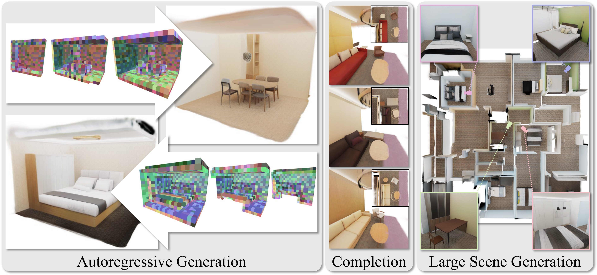
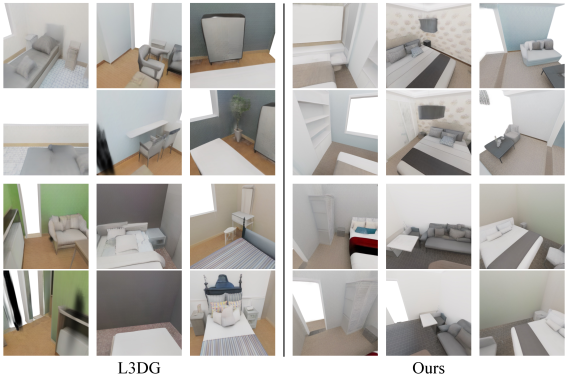

Paper Analyzer / Academic Reading Note
GaussianGPT：面向自回归 3D Gaussian 场景生成的系统解析
对 GaussianGPT: Towards Autoregressive 3D Gaussian Scene Generation（ECCV 2026）的方法、实现、实验和可复现边界进行逐层拆解。核心问题不是“能否把 3D 场景离散化”，而是这种离散化是否足以让 GPT 像生成语言一样，逐 token 地构造空间。

摘要框：先给出判断
- 研究对象：显式 3D Gaussian 场景，而非 RGB 图像或隐式 NeRF 网格。
- 表示：稀疏 3D CNN 将每个体素中的 Gaussian 属性压到 LFQ 离散 latent；位置 token 与 feature token 交错组成序列。
- 生成器：GPT-2 medium 规模的 decoder-only Transformer，使用 3D rotary positional embedding（3D RoPE）恢复真实空间关系。
- 能力：BOS 起步的无条件生成、空间前缀补全、滑动窗口 outpainting，以及 temperature / nucleus sampling 控制。
- 主要证据：PhotoShape 上 FID 5.68、KID 1.835、COV 67.40；3D-FRONT 补全任务中，50% 上下文的几何 MMD 0.057。
- 主要边界：自回归采样在无条件任务中慢于 L3DG；长场景沿外推方向发生误差累积；真实扫描受 VQ-VAE 高频重建和缺失区域限制。
1. 论文元信息与一句话总结
本文提出 GaussianGPT：先把连续的 Gaussian 场景压缩成稀疏、离散、带坐标的 token 网格，再用带 3D RoPE 的因果 Transformer 以 next-token prediction 顺序生成这些 token，最后通过冻结的 VQ-VAE 解码回可渲染的 Gaussian primitives。
论文的版本时间线需要明确区分。arXiv 页面记录 v1 于 2026 年 3 月 27 日提交，v2 于 7 月 1 日修订；项目页标注论文被 ECCV 2026 接收。本文以 v2 的 35 页 PDF 和实验附录为准，仓库则固定读取于公开 GitHub 的提交 e3be826（对象级检查点发布提交）。
代码状态不是“只有演示脚本”。仓库包含 VQ-VAE 训练、tokenization、GPT 训练、单块生成、空间补全、跨块大场景生成和渲染工具，并提供 VFront、ASE、PhotoShape、ScanNet++ v2 的配置入口；不过安装依赖涉及 CUDA 扩展，复现成本仍然显著。
| 维度 | 论文事实 | 实现/复现含义 |
|---|---|---|
| 表示 | 3D Gaussian primitives → sparse latent grid → discrete tokens | 需要与 VQ-VAE 配对的 GPT checkpoint，不能单独解码 |
| 主场景配置 | 0.025 m 基础体素，3 次下采样，latent voxel 约 0.20 m | conf/model/vqvae_cnn.yaml 中 stages: 3 |
| Transformer | GPT-2 medium，16,384 token context | conf/model/gpt.yaml：1024 hidden、24 layers、16 heads |
| 公开材料 | 训练/推理代码与三组预训练 checkpoint | 代码 MIT；数据和 CUDA 编译环境仍需自行准备 |
2. 研究背景：为什么要把 3D 场景写成序列
3D 生成的难点不只是输出维度高。一个室内场景同时包含几何、透明度、尺度、旋转、颜色和多视角可见性；同一把椅子在相机移动后必须仍然占据同一空间，而不是每个视角都重新“猜”一把外观相近的椅子。对场景而言，房间布局、物体共现和长距离依赖还会叠加在单物体几何之上。
扩散和 flow-matching 路线通常把生成写成整体去噪或连续流。它们擅长在一次全局更新中修正很多位置，但“给定左半间房，继续生成右半间房”不是自然的接口：需要额外的遮罩、重绘或条件分支来表达已经确定的部分。GaussianGPT 的出发点恰好相反，把场景视为可持续增长的结构化序列。
论文在引言中把实际环境描述为“progressively extended, completed, and edited”。这句话决定了模型的接口设计：如果场景本来就会被逐步搭建，那么训练目标应当允许模型在任意前缀后继续，而不是只输出一个一次性完整样本。
论文原文指出：“we frame 3D generation as an autoregressive process in which the scene is iteratively built by predicting new elements conditioned on the existing spatial context.” 这里的关键不是把 GPT 名字搬到 3D，而是寻找一种能承受因果分解的 3D 表示。
然而 3D 没有天然的阅读顺序。沿 x、y、z 中任何一个轴扫描都会切断一部分局部邻域；若只用一维位置编码，序列相邻并不等价于空间相邻。GaussianGPT 因此把两个设计问题绑定处理：用固定的 xyz traversal 提供可解释的索引，用 3D RoPE 在注意力内部重新注入真实坐标。
第二个瓶颈是 token 数量。直接把每个 Gaussian 的连续属性交给 Transformer 会让序列长度与点数一起爆炸，而且不同场景的点数不稳定。论文选择先用稀疏卷积和量化把许多 primitives 汇聚到较粗的 latent voxel，再让 GPT 建模相对稳定的离散代码。
因此，本文的创新不应简化成“用 Transformer 生成 Gaussian”。更准确的表述是：它把可渲染表示、空间索引、离散字典和因果采样设计成一条闭环，使补全和外推成为普通的前缀续写，而不是额外训练的任务头。
3. 预备知识：从 Gaussian primitive 到可学习 token
3D Gaussian Splatting 用一组带空间属性的高斯核近似场景。论文没有重新定义完整的渲染方程，但明确以位置、opacity、size、rotation 和 color 作为每个 primitive 的连续属性；下面的记号是对这一描述的标准化写法，而非论文编号公式。
其中 $\boldsymbol{\mu}_i\in\mathbb{R}^3$ 是世界坐标中心，$\mathbf{s}_i\in\mathbb{R}^3$ 是尺度，$\mathbf{R}_i$ 由四元数旋转得到，$\alpha_i$ 是 opacity，$\mathbf{c}_i$ 是颜色或球谐系数；$\boldsymbol{\Sigma}_i$ 是由尺度和旋转共同决定的协方差。渲染时，世界坐标会先变换到相机坐标，再投影到屏幕，沿深度排序后进行 alpha 合成，因此位置、尺度、旋转和颜色都可能通过图像重渲染损失回传。
来源标注：这是理解 3DGS 的预备记号；GaussianGPT 的论文正文以属性列表和渲染损失描述为主，并未把该式作为自己的新公式。
代码中的第一步不是直接学习 $\boldsymbol{\mu}_i$，而是把中心量化到基础网格，并保留相对偏移。设网格边长为 $s=0.025$ m，以下式子是对 ConfigurableVQVAE.embed() 的等价形式化。
$\mathbf{v}_i\in\mathbb{Z}^3$ 是稀疏体素坐标，$\boldsymbol{\delta}_i\in\mathbb{R}^3$ 是相对于体素中心的无量纲偏移；同一体素中的其他属性（尺度、opacity、四元数、颜色）会被送入对应的 embedding head。计算顺序是“坐标归一化→四舍五入得到索引→保留残差→拼接属性特征”，这样既把大量 Gaussians 聚合到规整网格，又避免把几何精度完全牺牲给粗粒度体素。
来源标注：该式根据仓库 model/vqvae/cnn/configurable_vqvae.py:248-316 推断，用于解释代码中的坐标系；论文正文只描述“relative offsets from voxel centers”。
稀疏卷积编码器输出连续 latent $z$ 后，论文采用 lookup-free quantization（LFQ）。论文的文字定义是“discretizing to 0 or 1 based on the sign”；为说明索引如何产生，可以写成下式。
$z_j$ 是 latent 向量的第 $j$ 个通道，$q(z_j)\in\{-1,+1\}$ 是符号量化结果，$\mathrm{idx}$ 把二值向量映射为离散代码索引；若使用 residual LFQ，则同一体素可有多个 code token。训练阶段仍需保留可微近似和 commitment/entropy 相关损失，推理阶段才把代码当作离散词表中的整数。
来源标注：论文明确给出 sign-based LFQ，但未在正文打印索引展开式；上式是根据 LFQ 语义的分析性展开，不应当当作论文原式。
坐标系
场景训练以世界坐标中的 chunk 为单位；位置 token 使用相对 chunk 坐标，BOS 使用配置中的 $(-1,-1,-1)$ 作为网格外的特殊坐标。
稀疏性
空体素不产生位置/特征行，decoder 的 occupancy head 在上采样阶段预测哪些坐标继续存在，并在训练中用 pruning 控制内存。
4. 方法详解：四个相互咬合的设计

flowchart LR
A["Gaussian primitives"] --> B["Sparse 3D CNN"]
B --> C["LFQ latent grid"]
C --> D["XYZ token stream"]
D --> E["Causal GPT + 3D RoPE"]
E --> F["Position and feature decode"]
F --> G["Gaussian scene"]
G --> H["Differentiable rendering"]
Figure 2 的箭头看起来像一个普通的编码器—解码器，但真正决定可生成性的是中间的离散网格。VQ-VAE 负责把连续场景压成 GPT 能承受的词表；GPT 只预测位置和代码，不直接预测每个 Gaussian 的 14 维或更多连续属性；解码器再把代码还原成可渲染参数。
4.1 场景压缩：稀疏体素、属性头与重渲染监督
输入首先被投影到稀疏 3D feature grid。每种属性拥有独立的轻量编码 head：线性扩展后接 residual MLP，再把所有 head 的输出拼接起来。这样做的理由是尺度、旋转、颜色和 opacity 的数值范围与语义不同，强行共享一个归一化路径会让优化目标互相竞争。
稀疏 3D CNN 的 encoder 逐级下采样，decoder 对应地上采样回体素级 feature。场景配置使用三次下采样：基础体素 2.5 cm，latent 网格约 20 cm；PhotoShape 对象使用两次下采样和更细的 8 mm 网格。这个差异解释了为什么同一仓库里有 vqvae_cnn.yaml 和 vqvae_photoshape.yaml 两套配置。
decoder 的 occupancy 预测并非只为可视化服务。训练时每个上采样 stage 都有目标坐标，二元交叉熵监督哪些稀疏位置应保留；推理时则通过 prune threshold 删除低置信度坐标。稀疏性因此既是速度优化，也是生成分布的一部分。
论文给出的 VQ-VAE 总损失是公式（1）：
$\mathcal{L}_{\mathrm{RGB}}$ 是多视角颜色重渲染的 L1 项，$\mathcal{L}_{\mathrm{perc}}$ 是 VGG19 感知损失，$\mathcal{L}_{\mathrm{occ}}$ 监督 decoder 的稀疏占据，$\mathcal{L}_{\mathrm{LFQ}}$ 鼓励代码使用率，$\lambda$ 是各项权重。计算顺序是“由 latent 解码 Gaussian → 用相机把它们渲染成图像 → 比较 RGB/感知误差，同时比较 occupancy 和代码熵”；因此梯度不仅约束 latent 的数值，还约束它是否能在真实相机下恢复可见外观。
来源标注：公式（1）为论文原式；括号中的 “re-rendering / occupancy / codebook entropy” 是论文原注释。
这个目标的核心取舍可以从附录 Table 7 看出。减少下采样会把平均 latent voxel 从 3.2k 提高到 14k 或 53k，并改善 20 个 epoch 时的 PSNR/SSIM，但序列长度随之增长，1×和 2×设置不适合后续自回归建模。作者因此宁可接受 3×配置早期较低的重建分数，也要把 token 数控制在 GPT 可处理的范围内。
4.2 序列化：一个体素的两个语义槽位
编码后的 latent grid 需要变成一维序列。论文采用固定 xyz traversal：在每个 $(x,y)$ 位置先遍历 z 方向的列，再跳到下一个平面位置。只保留有 occupancy 的体素，位置索引与 feature code 交错排列。
$p_k$ 是第 $k$ 个占据体素的位置词，$f_k$ 是该位置对应的 LFQ code（若配置使用多个 feature token，则 $f_k$ 是一个短序列），$m$ 是当前 chunk 的占据体素数。生成时位置 head 只在 position slot 预测位置词，feature head 只在 feature slot 预测代码；这种交错使几何和外观共享 Transformer 上下文，却不会争抢同一个词表的语义。
来源标注：序列写法是根据 Figure 2 和 Section 3.2 的交错规则整理，论文没有以单独编号打印该行。
位置词表大小必须是完美立方数，例如主场景配置的 8000 = $20^3$，这样整数 id 可以无歧义地还原为 chunk 内的 $(x,y,z)$。feature 词表默认 4096；在非 shared-vocab 模式下，代码中把 feature id 整体平移到 position vocab 之后，并预留 EOS/PAD id。
论文还比较了 Z-order、Hilbert 和转置版本。结果显示 xyz 的验证交叉熵最低（2.421），转置 Z-order 几乎相同（2.423），更复杂的曲线没有带来收益。这个结果不能被解读成“空间局部性不重要”，更准确的解释是：在当前 chunk 尺度和 3D RoPE 下，额外的序列局部性已经被显式坐标先验部分补偿。
4.3 3D RoPE：让注意力看到空间相对位移
普通 RoPE 只沿序列索引旋转 query/key。GaussianGPT 的 sparse position-based 配置则从已生成的位置 token 反解 $(x,y,z)$，再附加一个 slot 维度区分 position 与 feature。下面给出与代码等价的简化写法，其中 $\mathbf{r}=(x,y,z,\tau)$，$\tau$ 是 token 类型槽位。
每两个 head channel 组成一个复数对，$\boldsymbol{\omega}_d$ 是该频率对应的空间频率向量，$\mathbf{r}$ 在 sparse position layout 中包含三维坐标和 token slot；对 key/query 使用相反方向的旋转后，点积会依赖两 token 的相对坐标，而不是它们在一维序列中的距离。其直觉是：即使两个相邻体素在 xyz 序列中被空体素隔开，注意力仍可通过坐标知道它们相距一个体素；同一位置的 position 与 feature token 也能通过 $\tau$ 区分。
来源标注：论文只说明“3D rotary positional embedding”及额外 token-type 维度；上式是基于 RoPE 机制和仓库 model/gpt/rope.py:27-38、model/gpt/nanochat_gpt.py:542-585 的分析性表达。
这项设计在消融中有直接证据。将 3D RoPE 换成 learned positional embedding，验证 CE 从 2.421 升到 2.461；换成 1D RoPE 则为 2.446。差异不大，却稳定地说明序列索引本身不足以表达稀疏 3D 结构。
4.4 因果 Transformer：把“空间决定”转成 next-token loss
主场景模型使用 24 层、1024 hidden、16 attention heads、16,384 context 的 GPT-2 medium 规模配置；PhotoShape 使用 GPT-2 small 和 8,192 context。仓库在 nanochat backbone 上加入 query-key normalization、逐层 residual scaling、Muon 优化器和 3D RoPE，但关闭 value embedding 与 sliding-window attention。
论文的训练目标是标准 teacher forcing 交叉熵：
$t_i$ 是序列第 $i$ 个 token，$t_{<i}$ 是所有前缀，$T$ 是当前 chunk 的有效长度；position slot 和 feature slot 使用各自允许的词表，非法类别在 logits 上被 mask。输入是带 BOS/EOS 的 token 张量，输出是每一步对下一个 token 的概率分布；由于使用 teacher forcing，训练时模型看到真实前缀，推理时才面对自己之前的采样误差。
来源标注：公式（2）为论文原式；代码中的 shifted target 与 attention mask 位于 model/gpt/gpt.py:143-165。
从概率分解角度，公式（2）等价于：
这条展开式把“完整场景分布”拆成一串局部决策：先决定下一个有意义的空间位置，再决定该位置的 latent code，然后继续扫描。它解释了为什么同一模型可以处理无条件生成和补全：只要把已有 token 放进条件前缀，后续条件概率就自动变成“在已知空间上下文下的延续”。
来源标注：这是对公式（2）的概率分解，不是论文额外提出的目标。
4.5 推理：无条件、补全与大场景外推共享一个采样器
无条件生成从 BOS 开始，在位置与 feature 槽之间交替采样，直到 EOS 或达到上下文上限。temperature 和 nucleus sampling（主实验使用 temperature 0.9、$p=0.9$）改变的是每一步的离散分布，而不是在连续 Gaussian 参数上做后处理。
$\ell_i(v)$ 是第 $i$ 步的 logits，$\tau$ 是 temperature，$\mathcal{V}_{\mathrm{slot}(i)}$ 是由当前槽位决定的合法位置或 feature 词表；nucleus sampling 再从累计概率不超过 $p$ 的最小集合中抽样。$\tau<1$ 会集中到高概率布局，$\tau>1$ 会增加结构和外观多样性，但也更容易把错误带入后续上下文。
来源标注：温度和 nucleus 设定见论文 Section 4.2；该式是标准采样过程的分析性表示。
补全并不需要新的网络头。给定一部分场景，先通过 VQ-VAE 得到前缀 token，再调用同一 GPT 的 prompt sampling；仓库的 complete_chunks.py 按空间范围（例如 x 轴一半）截取上下文，而不是简单截断一维序列。这样可以保持边界处的空间坐标仍然与训练 chunk 对齐。
大场景外推采用滑动窗口。每次把已有的局部列作为上下文，预测下一列并写回场景网格；当某列为空时，generate_scene.py 默认最多重采样 5 次。这个启发式没有改变训练目标，却用一个可解释的拒绝条件抑制了空区域把模型带离训练分布。
$\mathcal{C}_k$ 表示当前已写入的列集合，$\mathcal{W}_k$ 是围绕生成前沿的局部上下文窗口，$\operatorname{append}$ 将新列变换回全局 chunk 坐标并写入。该过程的关键假设是局部窗口足以代表更大场景的条件分布；当外推距离增加时，早期采样误差会进入窗口并被重复使用，因此质量必然存在长程退化风险。
来源标注：这是对论文 Section 4.4 和 Appendix C 的过程形式化；论文明确报告“quality gradually deteriorates with distance from the initial context”。
4.6 设计差异的归纳
| 组件 | GaussianGPT | 扩散式 latent baseline（以 L3DG 为锚点） | 影响 |
|---|---|---|---|
| 生成因子 | 离散 token 的条件概率 | 整张 latent grid 的迭代去噪 | 前者天然支持前缀、温度和可变 horizon |
| 空间接口 | 位置 token + 3D RoPE | 固定网格或扩散 latent | 显式位置可做词表 mask，但增加序列设计负担 |
| 场景规模 | chunk 内训练，窗口化 outpainting | 通常在固定规范化网格内采样 | AR 可扩展，但误差会沿窗口累积 |
| 补全 | 直接续写 token 前缀 | 需要 RePaint 等额外条件机制 | 任务接口统一，边界条件更易保持 |
| 计算形态 | 逐 token 串行，KV cache | 每步可并行更新整张表示 | 无条件速度更慢，已有上下文越多 AR 越占优 |
5. 源码对应：论文概念如何落到函数
公开仓库把论文的“两阶段模型”实现成明确的文件边界：train_ae.py 训练 GaussianVQVAE，tokenize_dataset.py 把 checkpoint 编码成 token sidecar，train_gpt.py 冻结 VQ-VAE 并训练 GPT，generate_chunks.py 与 generate_scene.py 负责解码和采样。下面只贴最能说明信息流的短片段，行号对应公开仓库的当前提交。
5.1 LFQ 量化器：代码明确选择 lookup-free 路径
# model/vqvae/cnn/minkowski_vq.py:40-47
elif self.kind == "lfq":
self.vq = LFQ(
dim=self.dim,
codebook_size=self.codebook_size,
frac_per_sample_entropy=1.0,
soft_clamp_input_value=10.0,
experimental_softplus_entropy_loss=True,
projection_has_bias=False,
)论文 Section 3.1 说 LFQ 能改善 codebook utilization；源码同时打开 sample entropy 和 softplus entropy loss，并把 codebook size 从配置传入。这个对应关系说明“量化”不是一个抽象标签，而是训练损失和词表大小共同决定的工程接口。
仓库仍保留传统 VectorQuantize 分支，但主场景配置是 kind: lfq、codebook_size: 4096、num_tokens: 1。附录 Table 7 解释了取舍：16384 codebook 的重建略好，却只有 86.4% 使用率；传统 VQ 早期略强，却需要近邻搜索并使训练约慢三分之一。
5.2 Tokenization：坐标排序与 feature id 同步重排
# model/gaussian_vqvae.py:422-446
def tokenize(self, points: dict, sort_latents=None):
ae = self.autoencoder
coords, idxs = ae.get_idxs(points)
if idxs.dim() == 1:
idxs = idxs.unsqueeze(0)
assert torch.all(coords[:, 0] == 0)
coords = coords[:, 1:]
if sort_latents is not None and coords.numel() > 0:
coord_min = coords.min(dim=0).values
grid_coord = (coords - coord_min).long()
depth = int(grid_coord.max().item() + 1).bit_length()
codes = encode(grid_coord, depth=depth, order=sort_latents)
order = torch.argsort(codes.reshape(-1))
coords = coords.index_select(0, order)
idxs = idxs.index_select(1, order)
return {"coords": coords, "feature_ids": idxs.T}这里有两个容易被忽略的实现事实。第一，位置坐标和 feature id 使用同一个 order 同步重排，避免序列中的位置与外观错位；第二，返回值是 (N, 3) 坐标与 (N, num_feature_tokens) 特征索引，后续 GPT 才能把它们拼成交错 token 行。
5.3 解码：先校验 token，再回到稀疏 Gaussian
# model/gaussian_gpt.py:367-412
sample_tokens = tokens[idx, :sample_len]
token_rows = sample_tokens.view(-1, tokens_per_latent)
pos_tokens = token_rows[:, :num_pos_tokens]
feature_ids = token_rows[:, num_pos_tokens:]
all_pad = (feature_ids == pad_id).all(dim=1)
pos_invalid = (pos_tokens < 0) | (pos_tokens >= position_vocab_size)
feature_invalid = (~all_pad).unsqueeze(1) & (
(feature_ids < feature_offset) |
(feature_ids >= feature_offset + feature_vocab_size)
)
valid_mask = ~all_pad
coords = pos_tokens_to_centered_coords(
pos_tokens[valid_mask], num_pos_tokens, base_side_length
)
raw_feature_ids = (feature_ids[valid_mask] - feature_offset).long()
decoded = self.vqvae.decode(coords, raw_feature_ids)源码先按每个 latent 的槽位重塑序列，再检查位置和 feature id 是否越界；只有合法行才送入 VQ-VAE decoder。论文 Figure 2 中“Grid Placement & Codebook Lookup”的箭头，在这里变成了可追踪的坐标恢复、偏移校正和稀疏解码。
5.4 论文能力与公共接口的边界
论文把补全描述为“serialize the observed tokens and use them as a prefix prompt”。仓库的底层 sample_sequence_with_prompt() 确实支持这一接口，generate_scene.py:619-628 还会按 position/feature 槽位选择不同的 temperature 和 top-p，并可注入“禁止空列”的 logits processor。
但高层 GaussianGPT.sample() 在当前提交中对旧式 condition: GaussianScene 参数显式抛出 NotImplementedError，原因是 tokenization 已切换为坐标/feature id 返回格式。复现者应使用 README 指定的 complete_chunks.py 或 generate_scene.py，而不要把高层函数签名误认为任意 Gaussian 对象都可直接条件化。
gsplat、pytorch3d、Flash-Attention 和 MinkowskiEngine；单块生成还需要成对的 GPT/VQ-VAE checkpoint。代码是公开的，但“下载仓库后立即运行”并不是现实的复现路径。6. 实验分析：质量、条件能力与效率的三重证据
6.1 数据集与训练协议
论文把对象和场景分开评估。PhotoShape 提供 15,576 个标准化椅子，每个对象有 200 个渲染视角；3D-FRONT 经过 Gaussian 优化和空间过滤后保留 4,472 个场景，并用旋转/反射增强扩大八倍；ASE 提供 25,000 个室内场景，用于更大尺度和更丰富布局的预训练。真实世界实验则只使用 895 个 ScanNet++ v2 场景，其中 90% 用于微调。
场景 VQ-VAE 使用 12 个相机视图计算重渲染损失，PhotoShape 使用 4 个视图；GPT 主配置的 context window 是 16,384 token，采样温度 0.9、nucleus $p=0.9$。训练计算并不轻：场景 autoencoder 约 4 天、GPT 约 1 天，均使用多 GPU；这解释了为什么论文同时提供了预训练 checkpoint。
| 任务 | 数据 | 表示/分辨率 | 训练或评估规模 | 主要指标 |
|---|---|---|---|---|
| 对象生成 | PhotoShape Chairs | 128³，2×下采样，一级 SH | 15,576 对象；生成 1,000 个样本 | FID / KID / COV / MMD |
| 场景生成 | 3D-FRONT | 0.025 m → 0.20 m latent voxel | 4,472 场景；匹配 chunk 评测 | 外观、几何、layout FID/KID |
| 场景补全 | 3D-FRONT | 25% 或 50% x 轴上下文 | 200 个 GT chunk，每个 5 次补全 | CLIP-Sim / COV / MMD |
| 大场景外推 | ASE + 3D-FRONT | 滑动窗口，目标 12 m × 12 m | 每块约 4 m × 4 m，逐列追加 | 分块 KID 与外推退化 |
| 真实扫描 | ScanNet++ v2 | 半分辨率 chunk 微调 | 895 场景，250 epoch GPT 微调 | 定性补全与重建稳定性 |
6.2 对象级证据：外观分布领先，几何距离略有取舍

| 方法 | FID ↓ | KID ×10³ ↓ | COV ↑ | MMD ×10³ ↓ |
|---|---|---|---|---|
| π-GAN | 52.71 | 13.640 | 39.92 | 7.387 |
| EG3D | 16.54 | 8.412 | 47.55 | 5.619 |
| DiffRF | 15.95 | 7.935 | 58.93 | 4.416 |
| L3DG | 8.49 | 3.147 | 63.80 | 4.241 |
| GaussianGPT | 5.68 | 1.835 | 67.40 | 4.278 |
Table 1（论文）重现；FID/KID 越低越好，COV 越高越好，MMD 越低越好。
最有说服力的结果不是单个 FID 数字，而是四个指标的组合。GaussianGPT 的 FID 从 L3DG 的 8.49 降到 5.68，KID 从 3.147 降到 1.835，COV 从 63.80 提升到 67.40，说明生成样本在图像分布和覆盖多样性上都更接近 PhotoShape。另一方面，MMD 为 4.278，略差于 L3DG 的 4.241；这与论文所说的“remaining competitive in MMD”一致，表明外观清洁度的收益不是几何距离全面领先。
这一差异和表示选择有关。LFQ 把连续属性压到固定 codebook，能抑制孤立噪声，却也可能把细微曲率合并到同一个离散码；因此 COV（覆盖多少模式）可以提升，单个形状到真实集合的最近距离却不一定同步下降。
6.3 场景级证据：补全时自回归优势更明确

| 设置 | 方法 | 外观 FID ↓ | 外观 KID ↓ | 几何 COV ↑ | 几何 MMD ↓ | layout FID ↓ | layout KID ↓ | CLIP-Sim ↑ |
|---|---|---|---|---|---|---|---|---|
| 无条件生成 | L3DG | 100.98 | 0.095 | 0.692 | 0.096 | 93.84 | 0.092 | — |
| GaussianGPT | 94.85 | 0.084 | 0.548 | 0.118 | 84.14 | 0.077 | — | |
| 25% 上下文 | L3DG | 109.35 | 0.100 | 0.925 | 0.106 | 112.57 | 0.093 | 0.834 |
| GaussianGPT | 100.06 | 0.084 | 0.879 | 0.089 | 95.60 | 0.068 | 0.841 | |
| 50% 上下文 | L3DG | 106.54 | 0.096 | 0.940 | 0.084 | 111.71 | 0.092 | 0.843 |
| GaussianGPT | 98.13 | 0.081 | 0.940 | 0.057 | 90.77 | 0.063 | 0.851 |
Table 2（论文）重现；粗体表示每一行设置中的较优值，COV/MMD 的几何含义与对象实验一致。
Table 2 的关键不是 GaussianGPT 在所有无条件指标上都胜出。无条件生成中，L3DG 的几何 COV 0.692 高于 0.548、MMD 0.096 低于 0.118，说明扩散式全局更新更能覆盖训练几何分布；GaussianGPT 则在外观和 top-down layout 上更好。
当任务改为补全，差异发生了结构性变化。25% 上下文时，GaussianGPT 的几何 MMD 从 L3DG 的 0.106 降到 0.089，layout FID 从 112.57 降到 95.60；50% 上下文时 MMD 进一步降到 0.057，CLIP-Sim 0.851 也超过 0.843。越多的空间前缀可用，因果模型越能把确定信息直接保留下来，而不是像 RePaint 一样在每个去噪阶段重新修改全局网格。
论文对这组结果的总结是：“As the task shifts toward completion and more of the scene is observed, this trade-off increasingly favors our autoregressive formulation.” 这句话比“AR 全面优于 diffusion”更准确，也更符合表格。
6.4 大场景：能力成立，但代价与退化都可测

Appendix C 给出了更诚实的运行数据：一个 4 m × 4 m chunk 在 GH200 上约需 80 秒，而 12 m × 12 m 场景平均约 6,000 秒；启用 KV cache 时单 chunk 约 5 columns/s，大场景因无法完全复用 cache 降到约 0.6 columns/s。大场景能力因此更像“可扩展的研究接口”，还不是低延迟生产管线。

作者将方向不对称归因于 xyz 序列：沿 y 扩展时 token 跳跃较小，沿 x 扩展时空间跳跃更大。这个解释与 Table 3 的序列化消融相互支持，但尚未形成一个独立的“方向不变性”实验；因此它是有证据支撑的机制假设，而不是已经证明的定理。
6.5 效率与消融：自回归的收益取决于上下文比例
| 任务 | 方法 | 平均时间 | 峰值显存 |
|---|---|---|---|
| 无条件 | L3DG | 23.8 ± 0.07 s | 1.55 GB |
| GaussianGPT | 78.1 ± 15.8 s | 5.04 GB | |
| 25% 上下文 | L3DG | 24.0 ± 0.18 s | 1.59 GB |
| GaussianGPT | 54.5 ± 13.8 s | 5.24 GB | |
| 50% 上下文 | L3DG | 24.1 ± 0.14 s | 1.60 GB |
| GaussianGPT | 38.9 ± 12.4 s | 5.46 GB |
Table 5（论文附录）在单张 A100 上对 100 个样本统计；AR 关闭重采样，L3DG 关闭 backward repainting，以比较基础采样过程。
无条件任务中，GaussianGPT 的 78.1 秒和 5.04 GB 显著高于 L3DG；原因是每个 token 必须等待前一个 token，KV cache 还按最大 context 预留空间。补全上下文从 25% 增到 50% 时，AR 时间降到 38.9 秒，而 L3DG 几乎不变，因为后者仍需执行相同数量的全网格去噪步骤。
这组结果给出一个明确的适用边界：当已知空间占比高、需要保留边界条件时，串行计算换来了可控性；当需要从 BOS 生成完整房间时，扩散的并行更新更划算。论文附录提出 speculative decoding、稀疏注意力和更强 token 压缩，都是针对这个具体瓶颈的候选路径，而非泛泛地“加速模型”。
| 消融 | Train CE ↓ | Val CE ↓ | 解释 |
|---|---|---|---|
| xyz + separate vocab + 3D RoPE | 2.151 | 2.421 | 主配置 |
| Z-order | 2.203 | 2.432 | 略差，仍保留一定空间局部性 |
| Transposed Z-order | 2.204 | 2.423 | 接近主配置 |
| Shared vocabulary | 2.157 | 2.449 | 位置与外观竞争同一 id 范围 |
| Learned PE | 2.210 | 2.461 | 失去显式相对坐标 |
| 1D RoPE | 2.227 | 2.446 | 只看到序列距离 |
Table 3/4（论文）合并整理；所有变体固定其余训练设置，报告 epoch 70–74 的平均 CE。
消融的证据链是连贯的：复杂的 Hilbert/Z-order 并没有击败简单 xyz，说明序列顺序不是唯一的空间先验；但把 3D RoPE 换掉则稳定变差，说明模型仍需要直接访问坐标。独立 position/feature vocab 的收益也支持论文的语义解耦假设。
6.6 真实世界结果：可迁移，但重建器先成为瓶颈

真实扫描实验没有给出与合成场景同等规模的完整定量表，而是展示定性补全和训练设置。这一点应当保留在结论中：它证明了预训练先验可以迁移到非轴对齐、缺失观测的场景，但尚不足以证明真实数据上的几何精度已经达到合成数据水平。
7. 讨论：GaussianGPT 真正改变了什么
第一层贡献是表示层的接口设计。Gaussian primitives 适合实时渲染，却不适合直接作为语言模型 token；稀疏 VQ-VAE 把它们变成了可枚举的 code，并保留体素坐标作为第二种词。这个接口让 3D 场景可以使用成熟的因果训练、前缀条件和概率采样工具。
第二层贡献是任务统一。无条件生成、局部补全和大场景 outpainting 在网络结构上没有分叉，只是 BOS、已有 prefix 和滑动窗口的不同初始化。对于需要反复编辑场景的应用，这比为每种编辑模式训练独立 diffusion conditioner 更容易组合。
第三层贡献是对“空间序列化”的经验结论。作者没有声称 xyz 是普适最优顺序；相反，Table 3 显示多种顺序都接近，而 3D RoPE 是更稳定的收益来源。由此可以推断，后续工作应优先研究自适应坐标注意力、层次化 token 或局部/全局混合注意力，而不是只寻找另一条 space-filling curve。
从方法论角度，论文也提醒我们区分“生成质量”和“编辑可控性”。GaussianGPT 在无条件几何多样性上输给 L3DG，却在补全边界、layout 和 CLIP-Sim 上占优；如果只看单一 FID，结论会被压缩成错误的“扩散更好”或“自回归更好”。
最后，显式 Gaussian 表示让生成结果可以直接进入现代 neural rendering pipeline，而不必再从图像反推几何。这使模型适合做场景初始化、局部重建和可视化编辑；但它也把错误集中到一个可见的地方：VQ-VAE 一旦丢失高频细节，GPT 再准确地生成 code 也无法恢复不存在的信号。
8. 局限分析：作者自述与独立判断
8.1 作者明确承认的局限
（1）长程外推退化。论文附录 C 明确报告，距离初始 chunk 越远，KID 越差；重采样只能延迟空列和分布漂移。x 方向退化更强，说明当前 xyz 顺序和局部窗口不能稳定支持任意方向的无限扩展。
（2）真实扫描的 autoencoder fidelity。附录 A 指出，ScanNet++ 中高频细节不能被当前 VQ-VAE 完整重建，导致更嘈杂的几何和 Gaussian 预测；扫描中的缺失/未观测区域也无法由现有管线忠实建模。
（3）推理效率。Table 5 显示无条件 AR 采样比 L3DG 慢约 3.3 倍，峰值显存也更高；12 m × 12 m outpainting 约需 6,000 秒。作者提出 speculative decoding、KV-cache 优化和稀疏注意力，但这些尚未在论文中验证。
附录对真实数据的判断同样直接：“high-frequency details are often not fully reconstructed”，而未观测区域“cannot be faithfully modeled by the current pipeline”。这两句把问题定位在 tokenizer 与观测缺失，而不是笼统归咎于 Transformer 容量。
8.2 独立判断：三个结构性风险
数据与坐标先验的偏置。主场景训练依赖 3D-FRONT、ASE 等室内数据，chunk 垂直位置固定，配置还假设 z-up 的场景约定。这样的先验有利于房间布局，却可能让模型在非轴对齐、户外、跨楼层或不同单位尺度上失效；ScanNet++ 的小规模微调只能部分检验这一点。
误差分层但并未消失。模型把连续属性误差先压缩到 VQ-VAE，再把离散预测误差交给 GPT；两层误差在解码后相乘。论文的 Table 7 已显示 3×下采样的早期 PSNR 只有 21.11，说明“更短序列”是以信息瓶颈换来的，而不是免费降维。
补全的条件分布仍受序列顺序影响。空间前缀按 x/y 范围切分后，实际 token 顺序可能穿过多个空体素或跨越较远坐标；3D RoPE 缓解了这一问题，却没有保证条件分布对切分边界不变。未来应报告不同切分方向、不同 context 比例以及随机 mask 的系统性结果。
还有一个复现层面的风险：项目页的视频和论文图展示的是渲染后的视觉结果，代码仓库则允许通过 temperature、top-p、feature-specific sampling 和 empty-column retry 改变输出。若不记录随机种子、重采样次数、checkpoint 配对和数据预处理版本，定性图很难作为可重复的比较证据。
condition API 说成已验证的通用接口。9. 结论与研究启示
GaussianGPT 的主要贡献不是证明自回归模型在所有 3D 指标上击败 diffusion，而是证明了一个可运行的替代范式：只要连续 Gaussian 场景先被压成带坐标的离散 latent，GPT 就能用统一的因果机制完成生成、补全和外推。PhotoShape 上的 FID/KID/COV 结果说明这个接口具备足够的表示能力；3D-FRONT 的补全结果说明前缀条件确实转化成了更好的几何和布局一致性。
更值得延续的是论文暴露出的清晰研究问题：如何在不牺牲重建细节的情况下减少 token，如何让注意力在长场景中保持跨窗口记忆，如何为缺失观测显式建模不确定性，以及如何把串行采样改造成可验证的多 token 解码。这些问题都能直接对应到 VQ-VAE、RoPE/attention、sampling engine 和数据策略，而不是泛泛地“扩大模型”。
阅读材料：论文 v2、项目页、公开 GitHub 仓库及其 README；图像资产来自论文 arXiv HTML，代码片段标注仓库路径与行号。本文为中文学术型解析，不替代原论文中的完整定义、实验协议和许可证条款。
参考链接与复现入口
- von Lützow et al., GaussianGPT, arXiv:2603.26661：摘要、版本历史和论文入口。
- 论文 HTML v2：Figure 1–14、Table 1–7 与附录原文。
- 官方代码仓库：训练、tokenization、补全、outpainting 与渲染脚本。
- 检查点与 SHA256 说明：VFront、VFront+ASE、PhotoShape 的 GPT/VQ-VAE 配对下载。
- gsplat、MinkowskiEngine、Flash-Attention：仓库 README 列出的关键编译依赖。